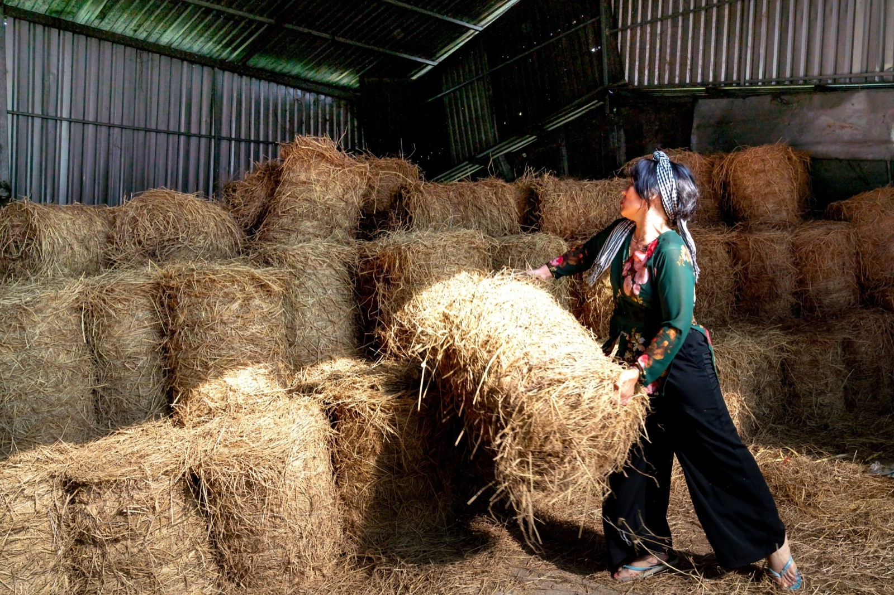

Straw Bale Homes
Walls of stacked straw bales, plastered inside and out — cheap agricultural waste turned into thick, cozy, super-insulated walls. Keep them dry and they last decades.

Straw bale building stacks tightly-packed bales of straw — the leftover stalks from grain harvests — into thick walls, then wraps them in plaster inside and out. The result is a cheap, carbon-storing, super-insulated wall with a cozy, cottage-like feel. There's exactly one thing that decides whether a straw bale home lasts 100 years or rots in five: keeping it dry.
How it's built
Bales are stacked like giant bricks — either as load-bearing walls (bales carry the roof) or, more commonly, as infill within a timber frame. They're pinned, compressed, and then coated in earth or lime plaster on both faces, which protects the straw, adds fire resistance, and gives the finished wall its solid feel. A good roof with wide overhangs and a raised foundation keep water away from the bales.
What does it cost?
Straw is cheap agricultural waste, so the material cost is low; a straw bale shell can be quite affordable, especially with volunteer 'bale-raising' labor. Total cost lands low-to-mid depending on the frame, plaster, and finish. (Approximate.)
The trade-offs at a glance
| Factor | Rating | Notes |
|---|---|---|
| Cost | 🟢 | Cheap ag-waste material; low-mid total |
| Insulation | 🟢 | Excellent — thick, cozy walls |
| Sustainability | 🟢 | Carbon-storing, uses a waste product |
| DIY-friendly | 🟢 | Bale-raising is approachable |
| Fire | 🟢 | Plastered bales resist fire well |
| Moisture/rain | 🔴 | Wet straw rots — the make-or-break factor |
| Pests | 🟡 | Sealed + plastered keeps rodents/insects out |
| Permitting/finance | 🟡 | Increasingly code-recognized, varies |
Buildability — how hard is it to actually build?
Straw bale is one of the friendlier natural methods to build — stacking bales is intuitive, community 'bale-raisings' are a tradition, and the skill barrier is moderate. The make-or-break skill isn't stacking; it's moisture detailing: a raised foundation to keep bales off the ground, wide roof overhangs ("a good hat and good boots"), vapor-appropriate plasters, and flashing that never lets water into a wall. That's exactly why straw bale is a natural fit in dry climates and a genuine challenge in humid, rainy tropics — sustained high humidity and driving rain are precisely what rot straw. It can be done in the tropics with meticulous detailing and the right plasters, but of all the natural methods, this is the one the wet tropics test hardest.
Thinking about building in Panama or Costa Rica?
SORA is a fixed-price design-build platform for foreign buyers. We build in reinforced concrete by default — and we can talk you through when an alternative method actually makes sense for the tropics. Play with cost live in the 3D configurator.
See real 2026 build costs →Frequently asked questions
Are straw bale walls a fire risk?
Counterintuitively, no — once plastered, straw bale walls are quite fire-resistant. Tightly packed bales lack the oxygen to burn readily, and the plaster skins add a protective, fire-rated layer. Loose straw is flammable; a finished straw bale wall is not.
Do straw bale houses rot or get moldy?
Only if they get wet and stay wet. Dry straw bale walls last for decades, but moisture is their fatal weakness, so the design must keep water out: a raised foundation, wide roof overhangs, breathable plasters, and careful flashing. This is why they suit dry climates best.
Can you build a straw bale house in a humid tropical climate?
It's the hardest natural method for wet tropics because sustained humidity and rain are exactly what rot straw. It's possible with excellent moisture detailing — big overhangs, a high plinth, and the right vapor-permeable plasters — but it demands more care there than in a dry climate.
Sources & verification
Figures in this guide were checked against primary and authoritative sources on 27 July 2026. Immigration, tax, and cost figures change — always confirm the current rules with the official body or a licensed professional before acting.
- azgreenbuilders — straw bale and natural materials
- thedesignfiles — natural building pros and cons